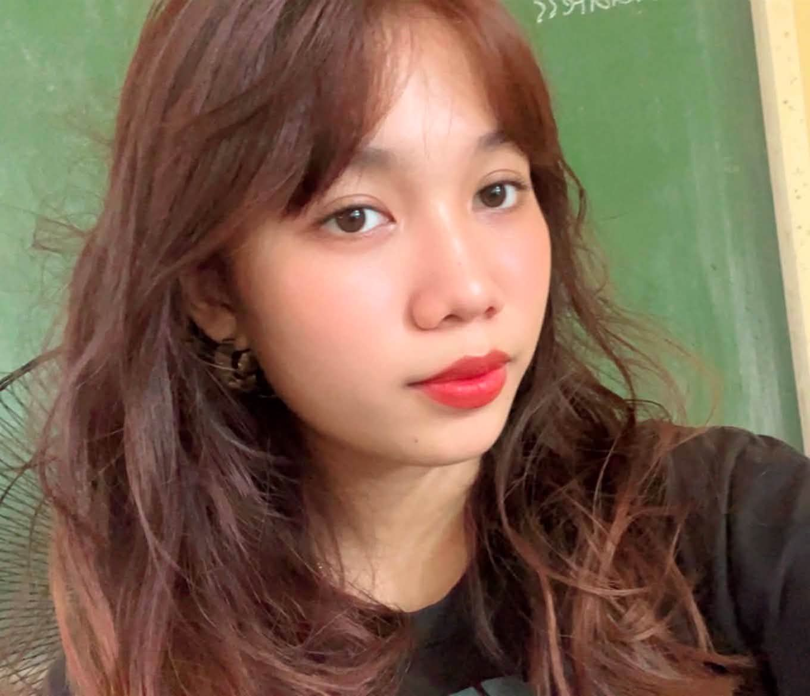
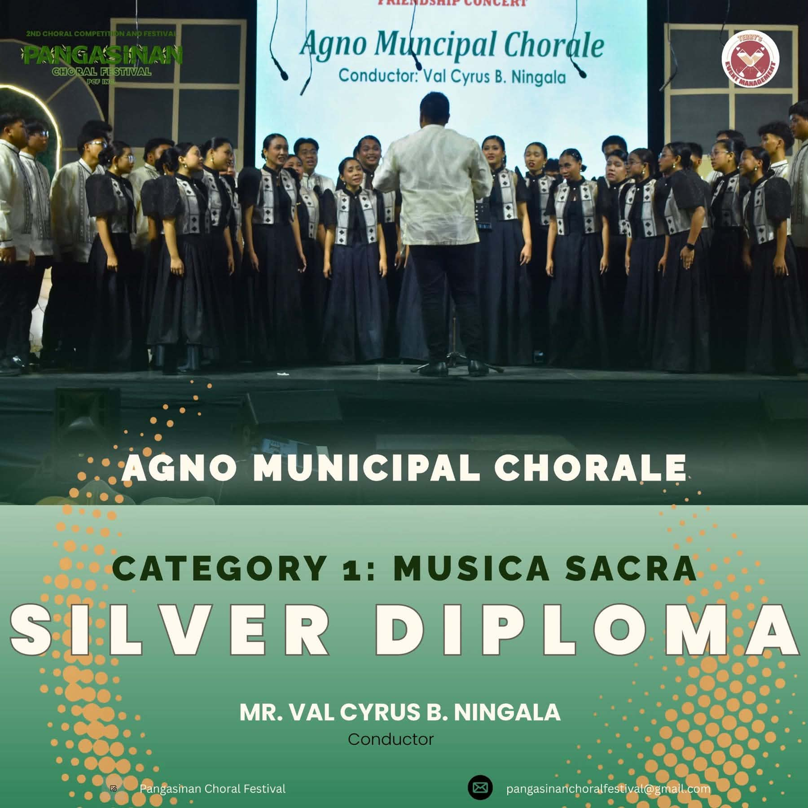

I am a Grade 11 senior high school student pursuing the Technical-Professional strand at my current school. Motivated by a deep passion for hospitality, service, and exploring the world, my main aspiration in terms of a career choice is that of becoming a Flight Attendant. Through my technical experience and skills, I aim to blend elegance, great customer service, and adaptability.
To become a successful Flight Attendant, you need to be friendly, show deep respect for different cultures, stay calm when things get tense, and maintain an immaculate, well-put-together presentation. I care a lot about makeup, fashion, and grooming, and I also enjoy visiting churches and engaging in quiet reflection. These personal interests have helped me master proper professional grooming, stay considerate of others, and treat every person with warmth and respect, no matter where they come from.
I have also built strong self-confidence, poise, and body awareness through my talents in singing and dancing. Having competed on stage with the Agno Municipal Chorale, that valuable experience helped me feel completely at ease around large crowds and perform under pressure. In day-to-day cabin situations, I use my communication skills to address passenger questions clearly and solve sudden problems without getting flustered. I can reliably support cabin safety procedures and assist passengers in a steady, attentive, and efficient way.
On top of that, my training in the Technical-Professional (TechPro) strand gives me a distinct advantage in modern aviation. I am comfortable working with computers, basic tech tasks, and digital software utilities. That combination means I can easily adapt when flight systems and digital manifests change, while still focusing on delivering clear, caring, and high-quality customer service throughout every flight.
AGNO MUNICIPAL CHORALE - PANGASINAN CHORAL FESTIVAL (MUSICA SACRA CATEGORY)
PROJECT DESCRIPTION:
I am part of the Agno Municipal Chorale (Coro Catalina), led by conductor Mr. Val Cyrus B. Ningala. We joined the 2nd Choral Competition and Festival, also called the Pangasinan Choral Festival. Our chorale entered Category 1, Musica Sacra. We received a Silver Diploma. This task demanded a lot from us. We practiced with strong focus, kept our voices steady, and worked as a team. We also had to stay calm and look composed while singing sacred music in front of the crowd and the panel of judges.

EVIDENCE NOTE:
This is a clear record of my vocal ability, my teamwork, my comfort when performing in public, and my prepared approach. These are key traits that can help me in future work, including roles that involve people and customer service, like a Flight Attendant.
REQUIREMENTS: Graduate SHS with strong grades while building fluent English communication and professional grooming habits.
EXECUTION PLAN: Excel in computer literacy and oral communication assignments, while participating in chorale performances to build stage presence and confidence.
REQUIREMENTS: Earn a degree in Tourism, Hospitality, or Communication, and gain practical customer service experience.
EXECUTION PLAN: Maintain personal physical fitness and grooming, while completing First Aid and foreign language certifications.
REQUIREMENTS: Meet airline physical height and reach requirements, pass comprehensive medical exams, and excel in panel interviews. Successfully complete intensive airline safety training, emergency procedures, medical response protocols, and cabin service standards.
EXECUTION PLAN: Prepare a professional resume and portfolio, attending open-day recruitment events for domestic and international airlines. Demonstrate exceptional communication, composure, and genuine hospitality during group assessments and flight simulator evaluations.
REQUIREMENTS: Earn official cabin crew licensing and complete initial flight line training under senior crew supervision. Consistently ensure passenger safety, manage inflight emergencies, and deliver first-class customer service across domestic and international routes.
EXECUTION PLAN: Fly active routes while continuously mastering updated aviation security and digital manifest systems. Progress toward senior cabin crew roles, lead flight attendant (purser), or airline customer service training positions over time.